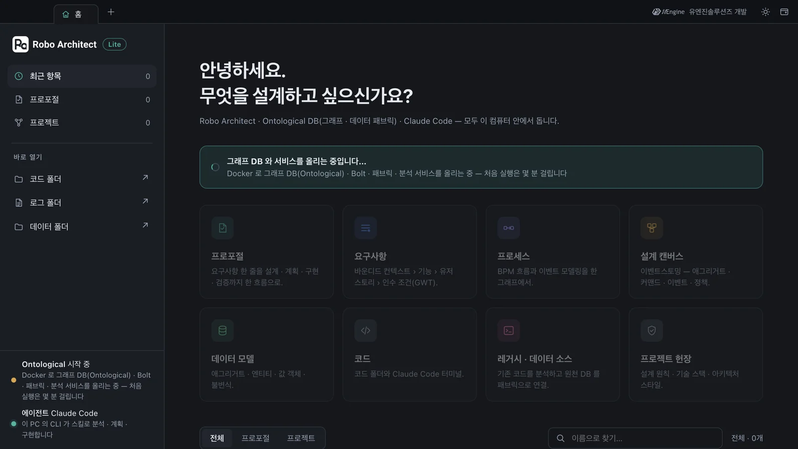
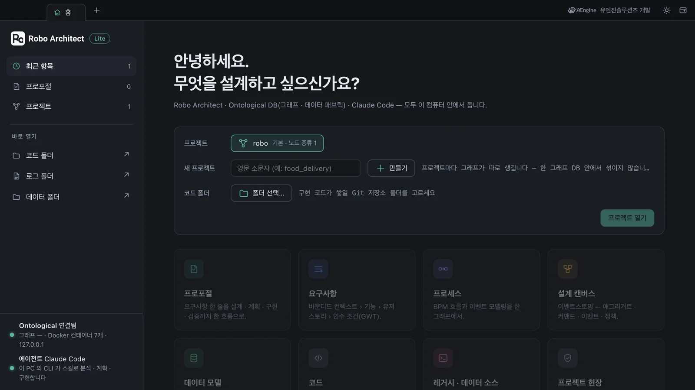
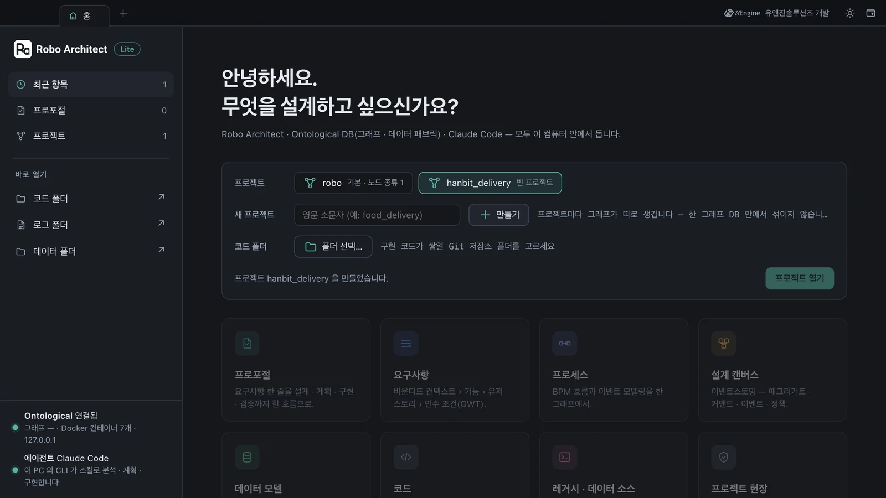
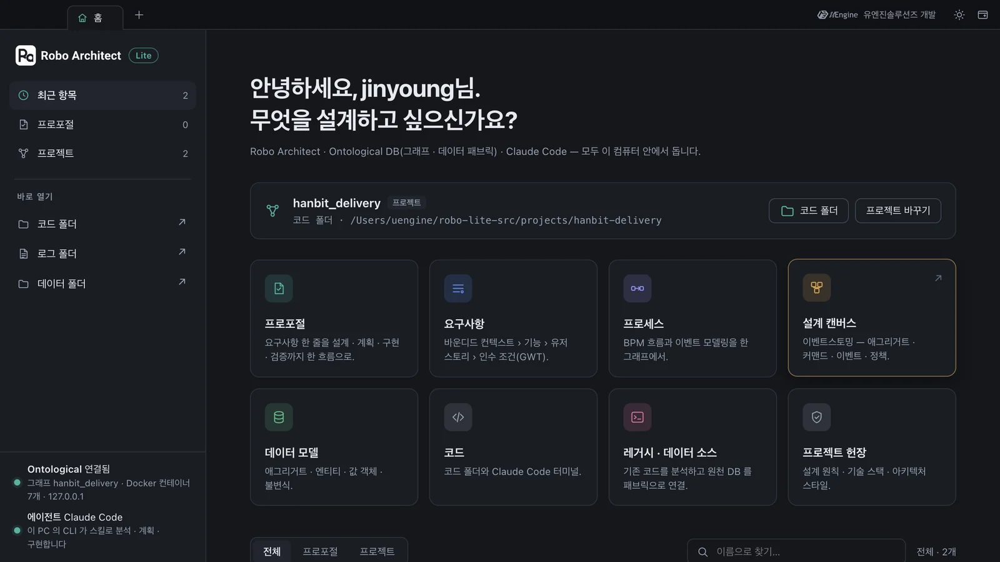

Robo Architect Lite 데스크톱 앱을 설치하고 처음 띄워, 앱이 그래프 DB와 분석 서비스를 Docker로 올리는 것을 확인한 뒤, 홈에서 첫 프로젝트 「hanbit_delivery」를 만들고 코드 폴더를 정해 엽니다.
무엇이 설치되나#
Lite는 데스크톱 앱 하나와 Docker 컨테이너 일곱 개로 돕니다. 앱을 켜면 앱이 컨테이너를 직접 올리고, 끄면 그대로 둡니다(다음 실행이 빠릅니다).
| 구성 | 하는 일 |
|---|---|
| 데스크톱 앱 | 화면, 그리고 내 컴퓨터에서 도는 Robo Architect 백엔드 |
| graph-db | Ontological DB — 설계를 그래프로 저장합니다. 프로젝트마다 그래프가 하나씩 생깁니다 |
| graph-bolt | 그래프 DB의 Bolt 프로토콜 입구. 앱은 여기로 질의합니다 |
| fabric · catalog | 데이터 소스(기존 DB)를 그래프 DB에 연결하고 스키마를 정리합니다(11장) |
| analyzer · parser · gateway | 레거시 코드를 읽어 분석합니다 |
Neo4j는 쓰지 않습니다. 예전 Robo Architect는 설계를 Neo4j에 두었지만, Lite는 데이터 소스 연결까지 그래프 DB가 직접 하는 Ontological DB를 씁니다.
준비#
| 항목 | 내용 |
|---|---|
| Docker Desktop | 설치하고 켜 둡니다. 디스크 여유 20GB, 메모리 16GB 이상을 권장합니다 |
| Claude Code | 터미널에서 claude 를 한 번 실행해 로그인해 둡니다. 프로포절의 분석·계획·구현이 모두 이것으로 돕니다 |
| Git | git --version 이 나오면 됩니다 |
| OpenAI API 키 | 요구사항 탭의 문서 업로드와 레거시 코드 분석(13장)에 씁니다. 3~12장은 키 없이 따라 할 수 있습니다 |
Claude Code가 맡는 일
Robo Architect의 엔진은 자체 AI 파이프라인이 아니라 Claude Code의 스킬입니다. 프로포절을 만들면 앱이 내 컴퓨터의 claude 를 불러 스킬 파일(10장)을 따라 일을 시킵니다. 그래서 API 키를 따로 넣지 않아도 되고, 같은 스킬을 터미널의 Claude Code에서 그대로 쓸 수도 있습니다.
따라 하기 1 — 설치#
Lite 설치본은 세 파일로 받습니다(uEngine에 요청). Windows 기준입니다.
| 파일 | 크기 | 내용 |
|---|---|---|
Robo-Architect-Setup-<버전>.exe |
약 100MB | 데스크톱 앱 설치 프로그램 |
robo-images.tar |
약 1.5GB | 컨테이너 이미지 일곱 개 묶음 |
SHA256SUMS |
두 줄 | 두 파일이 온전한지 확인하는 값 |
- 받은 폴더에서 PowerShell을 열고 두 파일의 해시가
SHA256SUMS와 같은지 봅니다.Get-Content .\SHA256SUMS Get-ChildItem .\Robo-Architect-Setup-*.exe, .\robo-images.tar | ForEach-Object { "{0} {1}" -f (Get-FileHash -Algorithm SHA256 $_).Hash.ToLower(), $_.Name } Robo-Architect-Setup-<버전>.exe를 실행합니다. 관리자 권한은 필요 없습니다. 마지막 화면의 「실행」 체크는 끕니다 — 설치 프로그램에서 띄운 앱은 설치 프로그램이 시작될 때의 환경을 물려받습니다.- 이미지 묶음을 앱의 데이터 폴더로 옮깁니다. 이 단계를 빼면 앱이 「이미지 묶음이 없습니다」로 멈춥니다.
$dst = "$env:APPDATA\robo-architect-desktop\runtime" New-Item -ItemType Directory -Force -Path $dst | Out-Null Copy-Item .\robo-images.tar -Destination $dst -Force - (13장을 하거나 요구사항 탭의 문서 업로드를 쓸 때) OpenAI 키를 사용자 환경 변수로 넣고 로그아웃·재로그인합니다. 서비스마다 읽는 이름이 달라 같은 값을 다섯 이름에 넣습니다.
foreach ($n in 'OPENAI_API_KEY','LLM_API_KEY','ROBO_LLM_API_KEY','ROBO_EMBED_API_KEY','ROBO_SEARCH_LLM_API_KEY') { [Environment]::SetEnvironmentVariable($n, '<발급받은 키>', 'User') }
macOS
이 튜토리얼의 화면은 macOS(Apple silicon)에서 같은 구성을 띄워 찍었습니다. macOS 설치본은 아직 배포하지 않으므로, macOS에서는 개발팀의 소스 실행 방법으로 띄웁니다. 앱을 띄운 뒤의 화면과 동작은 Windows와 같습니다.
따라 하기 2 — 처음 띄우기#
바탕화면의 Robo-Architect 아이콘으로 앱을 띄웁니다. 창 맨 위는 탭 줄이고, 처음 열리는 탭은 홈입니다. 홈의 가운데에 「그래프 DB 와 서비스를 올리는 중입니다…」가 보이는 동안 앱이 Docker 컨테이너 일곱 개를 올립니다. 이 튜토리얼의 컴퓨터에서는 처음 한 번 약 50초 걸렸습니다(설치본은 이미지 묶음을 풀어 넣느라 처음에 4~5분 걸립니다). 그동안 기능 카드는 흐리게 잠겨 있습니다.

다 올라오면 왼쪽 아래 상태가 Ontological 연결됨으로 바뀌고, 가운데에 프로젝트를 고르는 칸이 열립니다. 로그인은 묻지 않습니다 — Lite는 혼자 쓰는 앱이라 계정이 없고, 이름과 이메일은 내 컴퓨터의 Git 설정에서 읽습니다.

컨테이너가 모두 떴는지는 터미널에서 봅니다. 일곱 줄이 나오고 모두 healthy 여야 합니다.
docker ps --filter "label=com.docker.compose.project=robo-architect-desktop" --format "{{.Names}} {{.Status}}"
robo-architect-desktop-gateway-1 Up 17 seconds (healthy)
robo-architect-desktop-analyzer-1 Up 28 seconds (healthy)
robo-architect-desktop-catalog-1 Up 34 seconds (healthy)
robo-architect-desktop-fabric-1 Up 39 seconds (healthy)
robo-architect-desktop-graph-bolt-1 Up 45 seconds (healthy)
robo-architect-desktop-graph-db-1 Up 50 seconds (healthy)
robo-architect-desktop-parser-1 Up 50 seconds (healthy)
따라 하기 3 — 첫 프로젝트 만들기#
Robo Architect의 프로젝트는 그래프 DB 안의 그래프 하나입니다. 그래프 DB는 하나지만 그 안에 그래프를 여럿 둘 수 있어서, 프로젝트를 만들 때마다 그래프가 하나씩 생기고 서로 섞이지 않습니다. 처음에는 설치 때 만들어진 기본 프로젝트 robo 하나가 있습니다.
- 홈의 「새 프로젝트」 칸에
hanbit_delivery를 쓰고 ＋ 만들기를 누릅니다. 이름은 영문 소문자로 시작하고 소문자·숫자·밑줄만 씁니다. 「프로젝트 hanbit_delivery 을 만들었습니다」가 나오고 그 프로젝트가 골라집니다. - 코드 폴더의 「폴더 선택…」으로 구현 코드가 쌓일 폴더를 고릅니다. 이 튜토리얼은
hanbit-delivery라는 Git 저장소 폴더를 씁니다. 6장에서 Claude Code가 이 폴더에 코드를 쓰고, 프로포절마다 이 폴더의 Git 워크트리를 샌드박스로 씁니다. - 프로젝트 열기를 누릅니다. 앱이 백엔드를 이 프로젝트의 그래프로 맞추고(몇 초) 홈 위쪽에 열린 프로젝트를 보여 줍니다. 기능 카드가 켜집니다.


코드 폴더는 Git 저장소로
코드 폴더는 Git 저장소여야 샌드박스 구현(6장)이 됩니다. 빈 폴더라면 터미널에서 한 번 만들어 둡니다.
bash
mkdir hanbit-delivery && cd hanbit-delivery
git init -b main && git commit --allow-empty -m init
다음에 앱을 켜면 마지막에 연 프로젝트를 저절로 다시 엽니다. 다른 프로젝트로 가려면 홈의 프로젝트 바꾸기를 누릅니다.
확인할 것#
- 컨테이너 일곱 개가
healthy다. - 홈 위쪽에
hanbit_delivery프로젝트와 코드 폴더가 보인다. - 왼쪽 아래 상태가 「Ontological 연결됨 · 그래프 hanbit_delivery」, 「에이전트 Claude Code」다.
확인 문제#
- Lite에서 「프로젝트」는 무엇으로 저장되나요?
- 프로포절의 분석·계획·구현에 OpenAI 키가 필요한가요?
정답
- 그래프 DB(Ontological DB) 안의 그래프 하나입니다. 그래프 DB는 하나이고, 프로젝트마다 그래프가 따로 생겨 서로 섞이지 않습니다.
- 아닙니다. 프로포절 작업은 내 컴퓨터의 Claude Code가 스킬을 따라 합니다. OpenAI 키는 요구사항 탭의 문서 업로드와 레거시 코드 분석(13장)에만 씁니다.